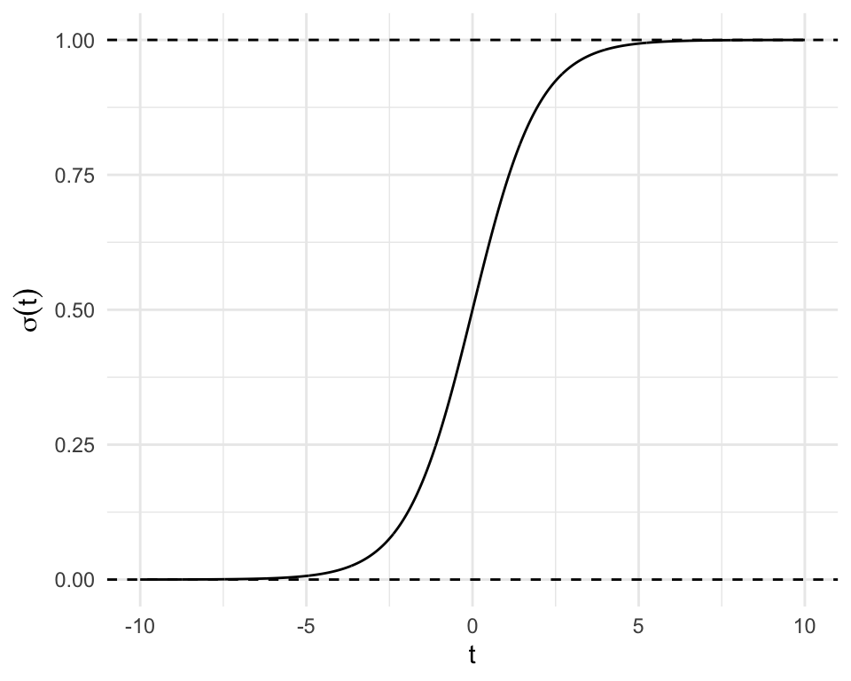

20 Classification
20.1 Logistic Regression
Goal: Predict a 1
- Response: 0 or 1
- Predictions: probability of a 1?
The Logistic Function - A Sigmoidal Function
If \(t\in\mathbb{R}\), then \[ \sigma(t) = \dfrac{\exp(t)}{1 + \exp(t)}\in[0,1] \] where \(\sigma(\cdot)\) is the logistic function.
Logistic Function - Now with Parameters


Logistic Function - Now with Parameters Estimated from DATA
\[\begin{align*} \eta(x_i) &= \beta_0 + \beta_1x_{i1} + \beta_2x_{i2} + ...\\ p(x_i) &= \sigma(\eta(x_i)) = \dfrac{\exp(\eta(x_i))}{1 + \exp(\eta(x_i))}\\ \implies \log\left(\frac{p_i(x_i)}{1-p_i(x_i)}\right) &= \beta_0 + \beta_1x_{i1} + \beta_2x_{i2} + ... \end{align*}\]
Show the code
library(ISLR2)
library(ggplot2)
library(dplyr)
#| echo: false
Default %>%
mutate(default = as.numeric(factor(default)) - 1) %>%
ggplot() + theme_minimal() +
aes(x = balance, y = default) +
geom_jitter(width = 0, height = 0.05) +
geom_smooth(method = "glm", se = FALSE,
method.args = list(family = "binomial")) +
labs(x = "Credit Card Balance",
y = "Default?")
\(\eta(x_i) = -10.65 + 0.0054\cdot\text{balance}_i\)
Logistic Regression
- The response is 0 or 1 (no or yes, dont’ default or default, etc.)
- The probability of a 1 increases according to the sigmoid function.
- The linear predictor is \(\eta(x_i) = \beta_0 + \beta_1x_{i1} + \beta_2x_{i2} + \cdots\)
- The probability of class 1 is \(P(\text{class }1 | \text{predictors}) = \sigma(\eta(x_i))\)
- Instead of normality assumptions, we use a binomial distribution.
It’s just one step away from a linear model!
Interpreting Parameters
- General structure: “For each one unit increase in \(x_i\), some function of \(y_i\) changes by some function of \(\beta\)”“.
- For logistic regression:
- For each one unit increase in \(x_i\), \(\log\left(\frac{p(x_i)}{1-p(x_i)}\right)\) increases by \(\beta\).
- The odds are \(\frac{p(x_i)}{1-p(x_i)}\).
- “1 in 5 people with offs of 1/4 will default on their loan.”
- \(\beta\) represents the change in log odds for a one unit increase.
- “log odds ratio”.
Estimating Parameters: Maximum Likelihood
For all observations:
- If \(y_i = 0\), we want \(p(x_i)\) to be as low as possible.
- Maximize \(1 - P(Y_{i'} = 1|\beta_0,\beta_1,X)\)
- If \(y_i = 1\), we want \(p(x_i)\) to be as high as possible.
- Maximize \(P(Y_{i'} = 1|\beta_0,\beta_1,X)\)
These can be combined as: \[ \ell(\beta_0,\beta_1) = \prod_{i':y_{i'} = 0}(1 - P(Y_{i'} = 1|\beta_0,\beta_1,X))\prod_{i:y_i=1}P(Y_i = 1|\beta_0,\beta_1,X) \] Which is NOT just the sum of squared errors!
Unlike linear regression, there’s no closed form for \(\hat\beta_0\) and \(\hat\beta_1\) \(\Rightarrow\) need numerical methods.
Examples: Two different predictors in the Default data
\[ \eta(x_i) = -3.5 + 0.5\cdot\text{student} \]
The odds of a student defaulting are \(\exp(0.5)\approx1.65\) times as high as a non-student.
\[ \eta(x_i) = -10.65 + 0.005\cdot\text{balance} \]
Each extra dollar of credit card balance increases the odds of defaulting by a factor of 1.005.
The scale of the predictors matters.
Odds versus Probabilities
“The odds of a student defaulting are \(\exp(0.5)\approx1.65\) times as high as a non-student.”
\[ \frac{P(\text{defaulting} | \text{student} = 1)}{1 - P(\text{defaulting} | \text{student} = 1)} \biggm/ \frac{P(\text{defaulting} | \text{student} = 0)}{1 - P(\text{defaulting} | \text{student} = 0)} = 1.65 \] This cannot be solved for \(P(\text{defaulting} | \text{student} = 1)\)!
\[ P(\text{defaulting} | \text{student} = 1) = \dfrac{\exp(\eta(x_i))}{1 + \exp(\eta(x_i))} = \dfrac{\exp(-3.5 + 0.5\cdot 1)}{1 + \exp(-3.5 + 0.5\cdot 1)} \approx 0.047 \]
Multiple Linear Logistic Regression
- Predictors can be multicollinear, confounded, and have interactions.
- Logistic is just Linear on a transformed scale!
- We do not look for transformations of the response.
- It’s already a transformation of the response \(p_i(x_i)\)!
- We do look for transformations of the predictors!
- Sigmoid + Polynomial is where the real fun is.
Errors in Logistic Regression: Deviance
- All “errors” are either \(p(x_i)\) or \(1 - p(x_i)\).
- Distance from either 0 or 1.
Instead, we use the deviance.
- If \(p(x_i)\) were the true probability in a binomial distribution, what’s the probability of the observed value (0 or 1)?
- This is used more broadly in Generalized Linear Models (GLMs). Logistic Regression is one of many GLMs.
Logistic Decision Boundaries
\[ P(\text{defaulting} | \eta(x_i)) > p \implies a + bx_1 + cx_2 + dx_3 > e \]
For some (linear) hyperplane \(a + bx_1 + cx_2 + dx_3\) and some value \(e\).
- Choosing \(p=0.5\) is logical, but other thresholds can be chosen.
- Cancer example: want to be more admissive of false positives
- Would rather operate and be wrong than falsely tell the patient that they’re healthy!
- Cancer example: want to be more admissive of false positives
Show the code
library(ggplot2)
library(ISLR2)
Default$default <- as.numeric(factor(Default$default)) - 1
Default$student <- as.numeric(factor(Default$student)) - 1
decision_grid <- expand.grid(
student = c(0,1),
balance = seq(0, 2655, length.out = 250),
income= seq(770, 73555, length.out = 250)
)
my_glm <- glm(default ~ student + balance + income,
data = Default, family = binomial)
decision_grid$pred <- predict(my_glm, newdata = decision_grid)
student_labels <- c("Not Student", "Student")
names(student_labels) <- c(0, 1)
ggplot() + theme_minimal() +
geom_tile(data = decision_grid,
mapping = aes(x = balance, y = income, fill = factor(pred > 0.5))) +
scale_fill_manual(values = c("firebrick", "green", "firebrick", "green")) +
geom_point(data = Default,
mapping = aes(x = balance, y = income,
fill = factor(default == 1)),
shape = 21) +
facet_wrap(~ student,
labeller = labeller(student = student_labels)) +
labs(x = "Credit Card Balance",
y = "Income",
fill = "Default?")Predictions - Just Plug it In!
| Intercept | Student | Balance | Income | |
|---|---|---|---|---|
| \(\beta\) | -10.09 | -0.65 | 0.0057 | 0.000003 |
We can make a prediction for a student with $2,000 balance and $20,000 income: \[\begin{align*} \eta(x) &= \beta_0 + \beta_1\cdot 1 + \beta_2\cdot 2000 + \beta_3\cdot 20000 \approx 0.0178\\ &\\ P(\text{defaulting} | x) &= \dfrac{\exp(\eta(x))}{1 + \exp(\eta(x))} \approx \dfrac{\exp(0.0178)}{1 + \exp(0.0178)} \approx 0.504\\ &\\ &P(\text{defaulting} | x) > 0.5 \implies \text{Predict Default} \end{align*}\]
20.2 Classification Basics
Goal: Predict a Category
- Binary: Yes/no, success/failure, etc.
- Categorical: 2 or more categories.
- A.k.a. qualitative, but that’s a social science word.
In both: predict whether an observation is in category \(j\) given its predictors. \[ P(Y_i = j| x = x_i) \stackrel{def}{=} p_j(x_i) \]
Classification Confusion
Confusion Matrix: A tabular summary of classification errors.
| True Pay (\(\cdot 0\)) | True Def (\(\cdot 1\)) | |
|---|---|---|
| Pred Pay (\(0 \cdot\)) | Good (00) | Bad (01) |
| Pred Def (\(1 \cdot\)) | Bad (10) | Good (11) |
- Two ways to be wrong
- Two ways to be right
- Different applications have different needs
Accuracy: \(\dfrac{\text{Correct Predictions}}{\text{Number of Predictions}} =\frac{00 + 11}{00 + 01 + 10 + 11}\)
Is “Accuracy” Good?
Task: Predict whether a person has cancer
(In this made up example, 0.02% of people have cancer).
| True Healthy | True Cancer | |
|---|---|---|
| Pred. Healthy | Save a Life | Lose a Life |
| Pred. Cancer | Expensive/Invasive | All good |
- Easy: 99.8% accuracy.
- Always guess “Not Cancer”
- Very Hard: 99.82% accuracy.
The Confusion Matrix for Default Data
| True Payment | True Default | |
|---|---|---|
| Pred Payment | 9627 | 228 |
| Pred Default | 40 | 105 |
- This model: 97.32% accuracy.
- Naive model: always predict “Pay” - 96.67% accuracy!
Other important measures (not on exam):
- Sensitivity: \(\dfrac{\text{True Positives}}{\text{All Positives in Data}} = \dfrac{9627}{9627 + 40} = 99.58%\) (Naive: 100%)
- Specificity: \(\dfrac{\text{True Negatives}}{\text{All Negatives in Data}} = \dfrac{105}{105 + 228} = 31.53\) (Naive: 0%)
Logistic Regression in R
See Course Notes
Model building works very similarly, but it’s very difficult to interpret the residual plots.
Show the code
library(palmerpenguins)
peng <- penguins[complete.cases(penguins), ]
log_cont <- glm(sex ~ bill_length_mm +
bill_depth_mm + flipper_length_mm,
data = peng, family = "binomial")
anova(log_cont, test = "Chisq") # SequentialAnalysis of Deviance Table
Model: binomial, link: logit
Response: sex
Terms added sequentially (first to last)
Df Deviance Resid. Df Resid. Dev Pr(>Chi)
NULL 332 461.61
bill_length_mm 1 41.185 331 420.42 1.385e-10 ***
bill_depth_mm 1 96.786 330 323.64 < 2.2e-16 ***
flipper_length_mm 1 72.666 329 250.97 < 2.2e-16 ***
---
Signif. codes: 0 '***' 0.001 '**' 0.01 '*' 0.05 '.' 0.1 ' ' 1Show the code
log_spec <- update(log_cont, ~ . + species * flipper_length_mm)
anova(log_cont, log_spec, test = "Chisq")Analysis of Deviance Table
Model 1: sex ~ bill_length_mm + bill_depth_mm + flipper_length_mm
Model 2: sex ~ bill_length_mm + bill_depth_mm + flipper_length_mm + species +
flipper_length_mm:species
Resid. Df Resid. Dev Df Deviance Pr(>Chi)
1 329 250.97
2 325 174.71 4 76.265 1.076e-15 ***
---
Signif. codes: 0 '***' 0.001 '**' 0.01 '*' 0.05 '.' 0.1 ' ' 1Show the code
full_spec <- glm(sex ~ species*(bill_length_mm +
bill_depth_mm + flipper_length_mm),
data = peng, family = "binomial")
anova(log_spec, full_spec, test = "Chisq")Analysis of Deviance Table
Model 1: sex ~ bill_length_mm + bill_depth_mm + flipper_length_mm + species +
flipper_length_mm:species
Model 2: sex ~ species * (bill_length_mm + bill_depth_mm + flipper_length_mm)
Resid. Df Resid. Dev Df Deviance Pr(>Chi)
1 325 174.71
2 321 170.32 4 4.3894 0.3559Show the code
anova(log_spec, update(log_spec, ~ . - species:flipper_length_mm), test = "Chisq")Analysis of Deviance Table
Model 1: sex ~ bill_length_mm + bill_depth_mm + flipper_length_mm + species +
flipper_length_mm:species
Model 2: sex ~ bill_length_mm + bill_depth_mm + flipper_length_mm + species
Resid. Df Resid. Dev Df Deviance Pr(>Chi)
1 325 174.71
2 327 178.78 -2 -4.0697 0.1307Show the code
summary(log_spec)
Call:
glm(formula = sex ~ bill_length_mm + bill_depth_mm + flipper_length_mm +
species + flipper_length_mm:species, family = "binomial",
data = peng)
Deviance Residuals:
Min 1Q Median 3Q Max
-3.2365 -0.3125 0.0033 0.3252 2.5852
Coefficients:
Estimate Std. Error z value Pr(>|z|)
(Intercept) -69.63032 10.83543 -6.426 1.31e-10 ***
bill_length_mm 0.65617 0.10521 6.237 4.47e-10 ***
bill_depth_mm 1.96180 0.29827 6.577 4.79e-11 ***
flipper_length_mm 0.04329 0.04375 0.990 0.3224
speciesChinstrap -38.57778 22.93391 -1.682 0.0925 .
speciesGentoo -34.58899 20.48998 -1.688 0.0914 .
flipper_length_mm:speciesChinstrap 0.15957 0.11696 1.364 0.1725
flipper_length_mm:speciesGentoo 0.15988 0.09666 1.654 0.0981 .
---
Signif. codes: 0 '***' 0.001 '**' 0.01 '*' 0.05 '.' 0.1 ' ' 1
(Dispersion parameter for binomial family taken to be 1)
Null deviance: 461.61 on 332 degrees of freedom
Residual deviance: 174.71 on 325 degrees of freedom
AIC: 190.71
Number of Fisher Scoring iterations: 7Show the code
coef(log_spec) (Intercept) bill_length_mm
-69.63031836 0.65616618
bill_depth_mm flipper_length_mm
1.96180392 0.04329349
speciesChinstrap speciesGentoo
-38.57777987 -34.58899421
flipper_length_mm:speciesChinstrap flipper_length_mm:speciesGentoo
0.15956974 0.15987824 The residual plots are the same as before:
Show the code
par(mfrow = c(2, 2))
plot(log_spec)
The predictions can either be on the logit scale (type = "link", the default) or on the response scale (probabilities).
Show the code
predict(log_spec, type = "response") |> head() 1 2 3 4 5 6
0.6335863 0.1789059 0.6382736 0.6613775 0.9918045 0.2059974 Regularization is often used with logistic regression (in python’s scikit-learn package, Ridge regularization is used by default without warning the user).
Show the code
library(glmnet)
X <- model.matrix(sex ~ species*(bill_length_mm +
bill_depth_mm + flipper_length_mm),
data = peng)
y <- as.factor(peng$sex)
mycv <- cv.glmnet(X, y, family = binomial)
mylasso <- glmnet(X, y,
data = peng, family = "binomial", alpha = 1,
lambda = mycv$lambda.1se)
coef(mylasso)13 x 1 sparse Matrix of class "dgCMatrix"
s0
(Intercept) -46.90824021
(Intercept) .
speciesChinstrap -3.49235983
speciesGentoo .
bill_length_mm 0.32778935
bill_depth_mm 1.26452716
flipper_length_mm 0.05765817
speciesChinstrap:bill_length_mm .
speciesGentoo:bill_length_mm .
speciesChinstrap:bill_depth_mm .
speciesGentoo:bill_depth_mm .
speciesChinstrap:flipper_length_mm .
speciesGentoo:flipper_length_mm . 20.3 Multinomial Regression
Multinomial Logistic Regression: K Classes
We have a total probability of 1 to distribute across the classes,
- Stick breaking
- Fit a logistic regression of
class 1versusnot class 1.- Remove obs. with
class 1
- Remove obs. with
- Fit a logistic regression of
class 2versusnot class 1.- Remove obs. with
class 2
- Remove obs. with
- …
- Class \(K\) gets whatever probability is left over.
- Fit a logistic regression of
- Softmaxing
- For all classes, fit a logistic regression of
class kversusnot class k. - In the end, divide by the total probability to make sure they sum to 1.
- Very often used in machine learning!
- For all classes, fit a logistic regression of
These two give the same results!